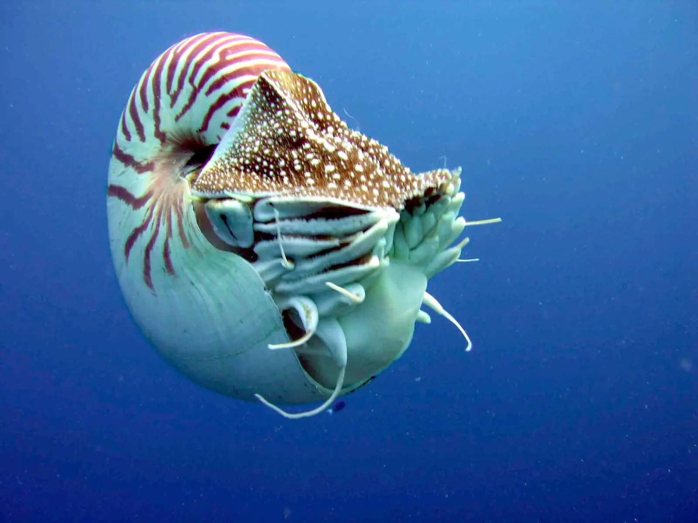

The ocean was a main place for evolution and amazing creatures and it still is today. Without the restrictions of gravity, some of the wackyest creatures have been in our oceans and are today. The Angler fish amd the Blobfish are examples of what enviormants with little to no gravity can get from evolution. In fact before life was ready to have the presure of gravity, life started in the ocean with small, single celled organizams that all they could do was breathe through their cell membrane and drift with the current. Acually, these types of creatures still exist today in all 5 oceans. They are phytoplankton the basic form of life and the primary producer of the oceans. There are other primary producers in the ocean including algea and seaweed. Coral is mistaken for being rocks or another primary producer but the truth is, coral is a animal even if it doesn't look it. It is multicellular and feeds on algea. Also coral doesn't make it's own food and doesn't use photosynthisis.
Image by Lee R Berger from Lee R Berger
The Nautilus is one of the most succeful types of creatures because they first appered 500 million years ago and still live today although now they arn't as big as they were many years ago, they are still wonderful. Nautilus are apart of the phylum Mollusca which includes scallops, ocopuses and cuttlefish. They also once reached sizes up to 10 feet making it bigger than some well known shark species including normal sized make Bull Sharks being only seven feet long. Also, Nautiluses have lived through all five mass extinction events including the Great Dying, the Devonian Extinction and the Cretaceous-Tertiary Extinction the mass extinction that wiped out the dinosaurs. The Nautilus is a amazing creature that is one of the wonders of the ocean.

Image by Wikimedia Commons from Wikimedia Commons
The Megalodon also referred to as the Meg was the king of the oceans for about 20 million years. It weighed about 30 tons and was about 82 feet long making it the largest fish to swim on the planet. It's diet was mainly balene whales. When there was a large decline of whales (mainly balene) the Megalodon couldn't get enough food fro whales and to add to it, the remaining whales were going to colder waters and most shark species arn't equiped well enough for cold waters so the Megalodon had to turn to other food sources mainly seals and sea lions. These creatures already had very succeful sharks for predators and the seals didn't provide enough energy for the monster shark for it to keep living. On top of it, the first Great White sharks were starting to apper and their ancestors were already hunting seals and sea lions. These new competators were so much that the Megalodon wasn't able to keep up with the smaller, faster shark. And finally, the final thing that made the Megalodon's extinction more inevitable was that Great White sharks were eating Megalodon infants before they could be compation so eventually about 2 million years ago, the largest fish to ever live went extinct. This giant shark was defintly a wonder of the ocean.